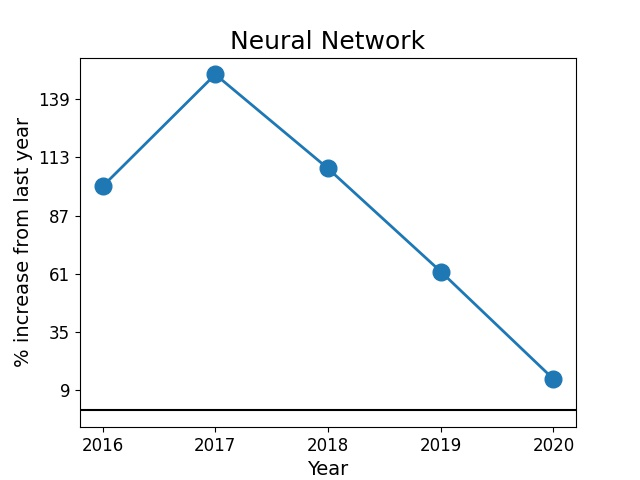

This project is geared towards young researchers such as undergraduates motivated to pursue graduate school. Undergraduate research experience is a major factor in graduate admissions. However, as a beginner, it is extremely challenging for an undergrad to identify the broad research topics and the fastest growing areas in any field he/she is interested in. Moreover, simply going through publication databases isn't a viable solution: every year thousands of papers are published in every research area in physics!
This project attempts to answer some of these problems. I have identified and compared the buzzwords of two different years which gives us an indication of the rising trends in physics. Using topic modelling, I have identified broad research topics as well as sub-topics contained in them. An interested reader can not only get a clear view of the research landscape in any broad are in physics but also find out some of the specific questions that belong to any field.
Using the arxiv database for physics, I have compared the buzzwords in all areas of physics between two different years, 2010 (on the left) and 2020 (on the right). To create this comparison, I analyzed ~7400 publication titles from 2010 and ~17,000 from 2020. We can see some emerging trends such as 'neural networks' and 'machine learning' as well as some topics that have stayed both stable and prolific over the years such as 'optics'. This is an indication that machine learning is gaining popularity in physics and is a very useful skill to possess. Notice that COVID was also talked about frequently by physicists in 2020.
In 2010, the top 10 most used words were:
'dynamic',
'quantum',
'network',
'optical',
'plasma',
'theory',
'state',
'simulation',
'electron',
'particle'
In 2020, the top 10 most used words are:
'dynamic',
'quantum',
'network',
'optical',
'simulation',
'flow',
'COVID',
'state',
'Modeling',
'Neural Network'
A bar chart provided below compares the most active fields within physics between 2010 and 2020. The numbers on the X-axis are the publication count. Comparing the 2010 and 2020 research trends, we see that the field of 'Optics' stayed the most active in a decade. In contrast, 'Applied Physics' has become more active recently whereas 'Physics and Society' has become less popular since 2010.
For topic identification, I have implemented an unsupervised machine learning algorithm known as Latent Dirichlet Allocation or LDA. In LDA, each word in a document is assigned a topic. Initially, this assignment is done randomly. To improve upon the assignment of topics to each word, we look at the probability of a word, w, belonging to a particular topic,t. This is calculated by making a subsample of all documents that are classified as a particular topic t and the number of documents in that subsample that contains the word w. The LDA then goes through each document in the corpus and calculates the probability that a topic t is contained in a document d. These two probabilities assign a new probability to every word in the document of belonging to a topic. Repeating this process many times gives us an equilibrium value of the probabilities associated with each word and document.
Below is a list of sub-topics I identified using LDA. I used 13,600 publication titles from the Astrophysics submissions of the year 2020.